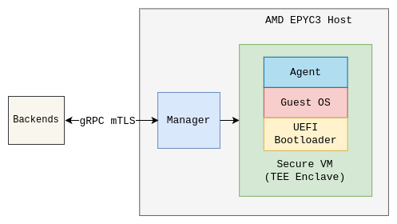
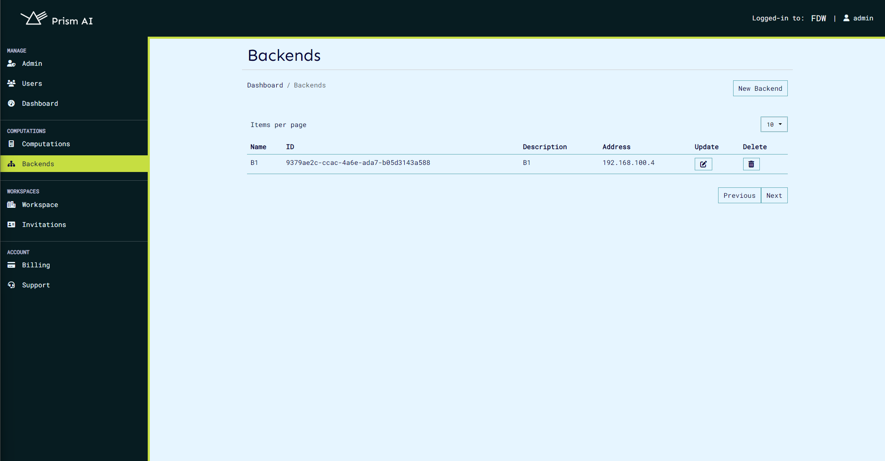
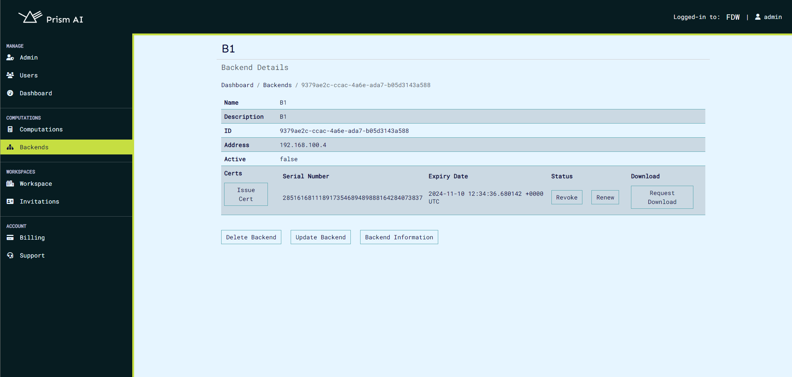
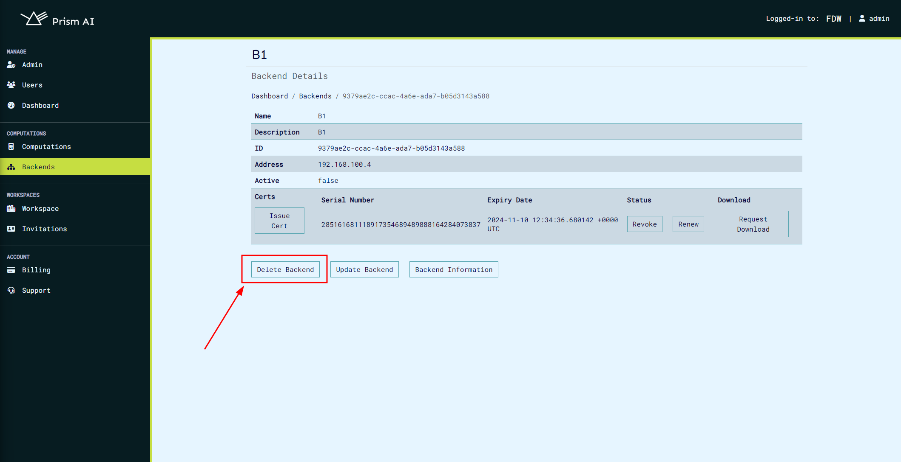
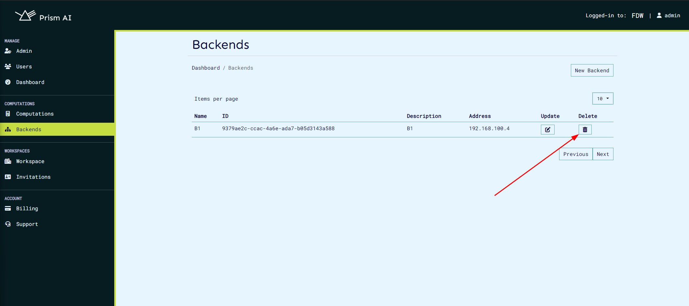

Backends Service#
The backends service provides a means to manage backends which is where computations run. The service allows the creation, update, viewing and deletion of a backend. The service also manages connections to different backends and monitors them as well as securing the connection with mutual TLS. The service also enables the termination of the manager service running on the backend.
A backend can be described as consisting on manager running on the host, along with agent in a virtual machine in a Trusted Execution Environment.

Creating a Backend#
This can be done on the user interface as below:

or by running:
curl -sSiX POST https://prism.ultraviolet.rs/backends -H "Content-Type: application/json" -H "Authorization: Bearer <user_token>" -d @- << EOF
{
"name": "my dell server",
"description": "",
"address": "192.168.100.4"
}
EOF
response:
HTTP/1.1 201 Created
Content-Type: application/json
Location: /backends/fde3263e-70b8-4ce9-9f3c-4a203a0dcdf5
Date: Thu, 02 May 2024 10:15:35 GMT
Content-Length: 0
Updating backend#
This can be done on the user interface:

or on curl:
curl -sSiX PUT https://prism.ultraviolet.rs/backends/<backend_id> -H "Content-Type: application/json" -H "Authorization: Bearer <user_token>" -d @- << EOF
{
"name": "my dell server",
"description": "new description",
"address": "192.168.100.4"
}
EOF
response:
HTTP/1.1 200 OK
Content-Type: application/json
Date: Fri, 03 May 2024 20:14:22 GMT
Content-Length: 0
Listing Backends#
List of backends is viewable on the ui:

This can be done on curl as shown below:
curl -sSiX GET https://prism.ultraviolet.rs/backends -H "Authorization: Bearer <user_token>"
response:
HTTP/1.1 200 OK
Content-Type: application/json
Date: Fri, 03 May 2024 20:17:03 GMT
Content-Length: 165
{"total":1,"limit":10,"backends":[{"id":"ca219243-0dd4-4e6e-94ad-54fbf3dd8b32","name":"my dell server","description":"some description","address":"192.168.100.4"}]}
View Backend#
An individual backend can be viewed on ui where it's details such as address, status, ID, certs and information can be acquired. Certs management is also carried out on this page.

This can be done on curl as below:
curl -sSiX GET https://prism.ultraviolet.rs/backends/<backend_id> -H "Authorization: Bearer <user_token>"
response:
HTTP/1.1 200 OK
Content-Type: application/json
Date: Fri, 03 May 2024 20:19:14 GMT
Content-Length: 129
{"id":"ca219243-0dd4-4e6e-94ad-54fbf3dd8b32","name":"my dell server","description":"some description","address":"192.168.100.4"}
Terminate Backend#
This is used to disconnect and close the associated backend connection. This is usually triggered when a certificate is revoked while the backend is connected using this certificate or user initiated for any reason. Please note that this action will stop all ongoing computations and stop manager and any running agent.
Manual backend termination can not be done directly on ui, but can be done using the HTTP API:
curl -sSiX GET https://prism.ultraviolet.rs/backends/terminate/<backend_id>/<termination_type> -H "Authorization: Bearer <user_token>"
Termination trype is an integer:
- 0 - Certificate revokation
- 1 - User initiated termination
response:
HTTP/1.1 204 No Content
Content-Type: application/json
Date: Fri, 03 May 2024 20:41:29 GMT
On manager the logs will be as follows:
{"time":"2024-05-03T23:41:29.664410497+03:00","level":"ERROR","msg":"manager service terminated: server requested client termination\nBackend Closed"}
{"time":"2024-05-03T23:41:29.671347637+03:00","level":"ERROR","msg":"Error shutting down tracer provider: context canceled"}
Delete Backend#
This removes the backend from the database. This can be done by clicking the delete button on the backend's page as shown:

Alternatively, the backend can be deleted on the backends list page by clicking the trash icon: 
This can be done on curl as shown below:
curl -sSiX DELETE https://prism.ultraviolet.rs/backends/<backend_id> -H "Authorization: Bearer <user_token>"
Response:
HTTP/1.1 204 No Content
Content-Type: application/json
Date: Fri, 03 May 2024 20:46:09 GMT